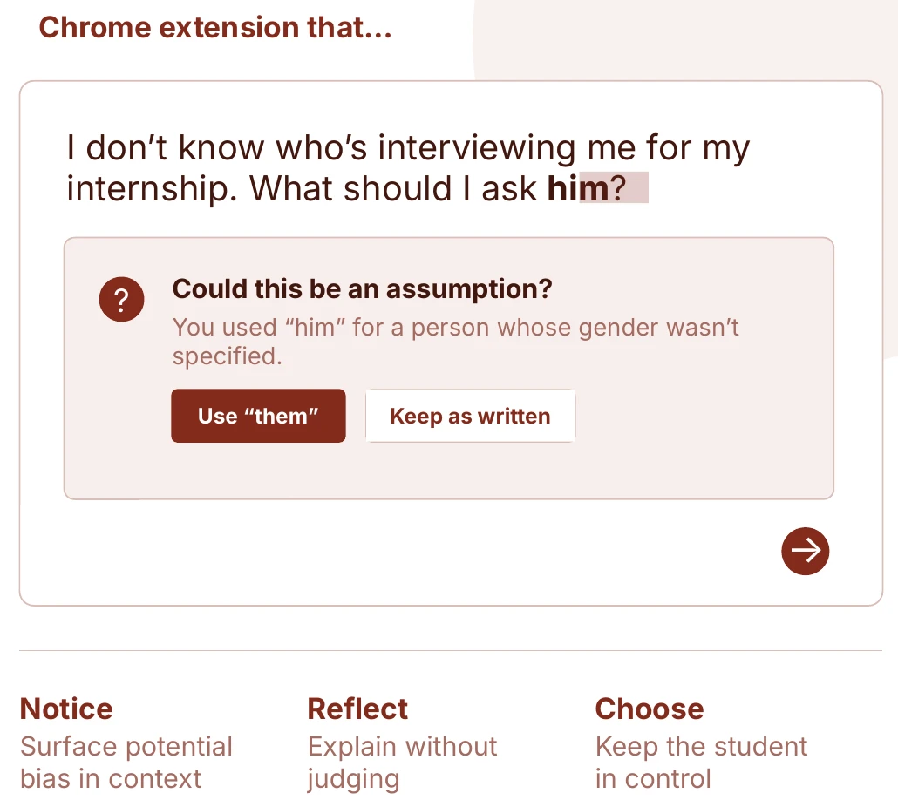

Mitigating AI Prompt Bias
With a team of five, I researched how people run into bias in generative AI, which led us to a tool that helps students catch bias in their own prompts.
- Role
- Researcher and team editor
- Methods
- Interviews, survey analysis, usability testing, contextual inquiry, affinity diagramming
- Tools
- Figma, FigJam, ChatGPT, Claude
- Status
- In progress, fall 2026
TL;DR
- The question
- How might we help students catch bias in their prompts before generative AI amplifies it?
- What I did
- Ran my own background research, analyzed open-ended survey answers, co-wrote and piloted our research guide, and edited every team deliverable.
- What came out of it
- A concept for a Chrome extension that points out loaded wording without policing how people write.
- Background researchInterviews, papers and testing AI ourselves
- Survey analysis2,179 people rated biased image search results
- Usability testingRan testing on how people steer Adobe Firefly
- Contextual inquiryEvaluated how students wrote real prompts and thought aloud
The problem
Although people may differ in how they understand AI bias, among those who do consider bias to be an issue, most people blame the training data or the algorithm. However, prompts themselves can amplify model bias. For instance, prompts that assume gender norms may lead the model to reflect those gender norms as well.
How might we help students catch bias in their prompts before generative AI amplifies it?
Our approach
Our course project asked how people run into unintended harms from generative AI. To start, each of us talked to someone who uses AI at work and tried the tools ourselves. I interviewed the operations head of a small company about automating their work, read research on how model makers, users and workers each think about harm, and kept a diary of asking ChatGPT and Claude to do risky tasks. I sorted my notes into the affinity diagram below.
Next, we analyzed 2,179 responses to a CMU survey on bias in image search results. I took the open-ended answers, sorting them with ChatGPT’s help to see how people explained what they saw, and made visualizations based on their responses. Then we ran usability tests of Adobe Firefly to see how people use a novel AI tool. They found prompting easy, but rarely used the controls beyond the prompt box, even typing “undo” into it.
Once we had our focus, we planned sessions where students write prompts for everyday tasks while thinking aloud, without being told we were looking for bias. I co-wrote the guide and the consent form, then piloted it. My pilot showed that when asking people to prompt certain things, they repeated the prompts we wrote word-for-word, so I pushed to rewrite the tasks to force real word choices.
My part on the team. Besides my own research, I was the team’s editor: I revised every deliverable and split up work that hadn’t been assigned. Beyond this, I also took lead on the data visualization aspects, since that's where I felt the most capable.

What we found
Awareness matters more than exposure. People who knew algorithms well were far more likely to say they were very aware of societal bias. People who rated biased results harmless mostly described the images as nice, using words like “love” and “happy,” rather than defending the bias. Rather than downplaying bias, they weren't aware that it was a possibility.
Beyond this, both AI and humans have tools to detect bias and harm. However, when engaging in areas where both the AI and human are less capable of preventing bias, mistakes are much more likely to crop up.
These findings led to the realization that catching bias before the prompt was sent helps make people more aware of bias and can prevent it from happening in the first place.

What I took from it
We pitched the extension to the class and are now conducting additional research and data analysis before designing it in detail.
So far, my takeaway is that findings from diverse sources can coalesce into a singular insight by looking at their common threads, such as evaluating how bias is generated holistically.